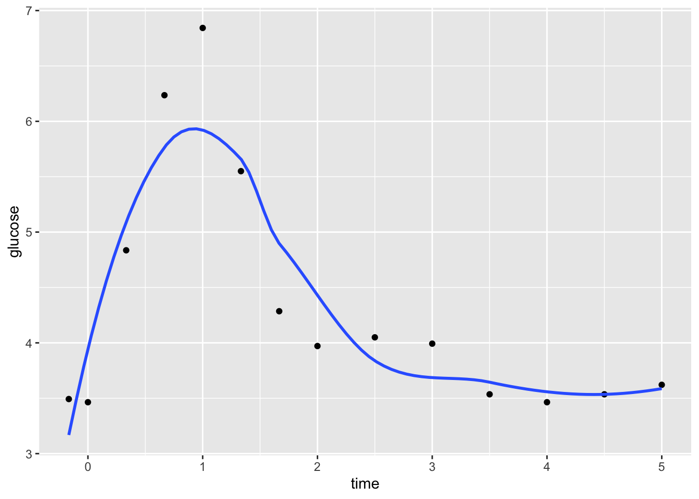

9 LOESS & GAMs
Settling In
- Join the #events channel on Slack and check-out my recent announcement about upcoming events
- Review the “Important Notes” at the top of HW3
- Prepare to take notes (find today’s QMD in the usual spot)
Announcements
- Quiz 1 next Tuesday
- Topic: Regression (Units 1–3)
- Part 1: TBD
- Part 2: TBD
- HW3 due Thursday
- Special instructions for this one – review the Important Notes before you begin!
- Limited extension opportunities to facilitate quick turnaround on feedback/sharing solutions (in time for Quiz 1)
Learning Goals
- Clearly describe the local regression algorithm for making a prediction
- Explain how bandwidth (span) relate to the bias-variance tradeoff
- Describe some different formulations for a GAM (how the arbitrary functions are represented)
- Explain how to make a prediction from a GAM
- Interpret the output from a GAM
Context

CONTEXT
world = supervised learning
We want to model some output variable \(y\) using a set of potential predictors (\(x_1, x_2, ..., x_p\)).task = regression
\(y\) is quantitative(nonparametric) algorithm
GOAL
Our usual parametric models (eg: linear regression) are too rigid to represent the relationship between \(y\) and our predictors \(x\). Thus we need more flexible nonparametric models.
KNN Recap
Discuss the following questions with your group to review key concepts from recent activities.
Example 1: KNN Review
In the previous activity, we modeled college Grad.Rate versus Expend, Enroll, and Private using data on 775 schools.
We chose the KNN with K = 33 because it minimized the CV MAE, i.e. the errors when predicting grad rate for schools outside our sample. We don’t typically worry about a more parsimonious KNN, i.e. a model that has slightly higher prediction errors but is easier to interpret, apply, etc. Why?
What assumptions did the KNN model make about the relationship of
Grad.RatewithExpend,Enroll, andPrivate? Is this a pro or con?What did the KNN model tell us about the relationship of
Grad.RatewithExpend,Enroll, andPrivate? For example, did it give you a sense of whether grad rates are higher at private or public institutions? At institutions with higher or lower enrollments? Is this a pro or con?
Solution
- The output of the model is: one prediction for one observational unit. There is nothing to interpret (no plots, no coefficients, etc.). Also: there is no way to tune the model to use fewer predictors.
- The only assumption we made was that the outcome values of \(y\) should be similar if the predictor values of \(x\) are similar. No other assumptions are made.
- This is a pro if we want flexibility due to non-linear relationships and that assumption is true.
- This is a con if relationships are actually linear or could be modeled with a parametric model.
- Nothing.
- I’d say this is a con. There is nothing to interpret, so the model is more of a black box in terms of knowing why it gives you a particular prediction.
Further details are in exercises for previous activity.
Example 2: Nonparametric vs Parametric
Nonparametric KNN vs parametric least squares and LASSO:
- When should we use a nonparametric algorithm like KNN?
- When shouldn’t we?
Solution
Use nonparametric methods when parametric model assumptions are too rigid. Forcing a parametric method in this situation can produce misleading conclusions.
Use parametric methods when the model assumptions hold. In such cases, parametric models provide more contextual insight (eg: meaningful coefficients) and the ability to detect which predictors are beneficial to the model.
LOESS
Notes
Local Regression or Locally Estimated Scatterplot Smoothing (LOESS)
. . .
Goal:
Build a flexible regression model of \(y\) by one quantitative predictor \(x\),
\[y = f(x) + \varepsilon\]
. . .
Idea:
Fit regression models in small localized regions, where nearby data have greater influence than far data.
. . .
Algorithm:
Define the span, aka bandwidth, tuning parameter \(h\) where \(0 \le h \le 1\). Take the following steps to estimate \(f(x)\) at each possible predictor value \(x\):
- Identify a neighborhood consisting of the \(100∗h\)% of cases that are closest to \(x\).
- Putting more weight on the neighbors closest to \(x\) (ie. allowing them to have more influence), fit a linear model in this neighborhood.
- Use the local linear model to estimate f(x).
. . .
In pictures:

Discussion
Open the QMD and find the LOESS discussion questions.
Example 3: LOESS in R
We can plot LOESS models using geom_smooth(). Play around with the span parameter below.
- What happens as we increase the span from roughly 0 to roughly 1?
- What is one “pro” of this nonparametric algorithm, relative to KNN?
- What questions do you have about this algorithm?
library(tidyverse)
library(ISLR)
data(College)
ggplot(College, aes(x = Expend, y = Grad.Rate)) +
geom_point() +
geom_smooth(method = "loess", span = 0.5)Solution
- as we increase span, the model becomes smoother and more simple
- compare to KNN, LOESS is smoother, more like the shape of the relationship we’re trying to estimate
Note: you’ll find that you can specify span greater than 1. Use your resources to figure out what that means in terms of the algorithm.
Example 4: LOESS & the Bias-Variance Tradeoff
Run the shiny app code, below. Explore the impact of the span tuning parameter h on the LOESS performance across different datasets. Continue to click the Go! button to get different datasets.
For what values of \(h\) (near 0, somewhere in the middle, near 1) do you get the following:
- high bias but low variance
- low bias but high variance
- moderate bias and low variance
Solution
- h near 1
- h near 0
- h somewhere in the middle
# Load packages & data
library(shiny)
library(tidyverse)
# Define a LOESS plotting function
plot_loess <- function(h, plot_data){
ggplot(plot_data, aes(x = x, y = y)) +
geom_point() +
geom_smooth(span = h, se = FALSE) +
labs(title = paste("h = ", h)) +
lims(y = c(-5,12))
}
# BUILD THE SERVER
# These are instructions for building the app - what plot to make, what quantities to calculate, etc
server_LOESS <- function(input, output) {
new_data <- eventReactive(input$do, {
x <- c(runif(25, -6, -2.5), runif(50, -3, 3), runif(25, 2.5, 6))
y <- 9 - x^2 + rnorm(100, sd = 0.75)
y[c(1:25, 76:100)] <- rnorm(50, sd = 0.75)
data.frame(x, y)
})
output$loesspic <- renderPlot({
plot_loess(h = input$hTune, plot_data = new_data())
})
}
# BUILD THE USER INTERFACE (UI)
# The UI controls the layout, appearance, and widgets (eg: slide bars).
ui_LOESS <- fluidPage(
sidebarLayout(
sidebarPanel(
h4("Sample 100 observations:"),
actionButton("do", "Go!"),
h4("Tune the LOESS:"),
sliderInput("hTune", "h", min = 0.05, max = 1, value = 0.05)
),
mainPanel(
h4("LOESS plot:"),
plotOutput("loesspic")
)
)
)
# RUN THE SHINY APP!
shinyApp(ui = ui_LOESS, server = server_LOESS)GAM
Notes
Generalized Additive Models (GAM)
GAMs are nonparametric nonlinear models that can handle more than one predictor. They incorporate each predictor \(x_i\) through some nonparametric, smooth function \(f_i()\):
\[y = \beta_0 + f_1(x_1) + f_2(x_2) + \cdots + f_p(x_p) + \varepsilon\]
. . .
Big ideas
- Each \(f_j(x_j)\) is a smooth model of \(y\) vs \(x_j\) when controlling for the other predictors. More specifically:
- Each \(f_j(x_j)\) models the behavior in \(y\) that’s not explained by the other predictors.
- This “unexplained behavior” is represented by the residuals from the model of \(y\) versus all predictors.
- The \(f_j()\) functions are estimated using some smoothing algorithm (e.g. LOESS, smoothing splines, etc).
. . .
TECHNICAL NOTE
In tidymodels():
The GAM f(x) components are estimated using smoothing splines, a nonparametric smoothing technique that’s more nuanced than LOESS.
Smoothing splines depend upon a \(\lambda\) penalty tuning parameter (labeled
adjust_deg_freeintidymodels). As in the LASSO:- the bigger the \(\lambda\), the more simple / less wiggly the estimate of f(x)
- if \(\lambda\) is big enough, we might even kick a predictor out of the model
More optional details are included in the “Deeper learning” section.
Discussion
Discuss the following example with your group.
Example 5: GAM
Interpret the wage analysis in Chapter 7 of ISLR.
wage = \(\beta_0\) + f(year) + f(age) + f(education) + \(\varepsilon\)
Solution
for example: when controlling for education level and year, wages have a quadratic-ish relationship with age. Both younger and older workers tend to have lower wages.Other Flexible Models
KNN, LOESS, and GAM aren’t the only algorithms for building more flexible models! Chapter 7 of the book also discusses:
- piecewise polynomials (parametric)
- regression splines (parametric)
- smoothing splines (nonparametric)
Exercises
Getting Started
Goals
- Implement and explore GAM in R.
- Explore how this algorithm compares to others, hence how it fits into our broader ML workflow.
Context
Using the College data in the ISLR package, we’ll build a predictive model of Grad.Rate by 6 predictors: Private, PhD (percent of faculty with PhDs), Room.Board, Personal (estimated personal spending), Outstate (out-of-state tuition), perc.alumni (percent of alumni who donate)
# Load packages
library(tidymodels)
library(tidyverse)
library(ISLR)
# Load data
data(College)
# Wrangle the data
college_sub <- College %>%
filter(Grad.Rate <= 100) %>%
filter((Grad.Rate > 50 | Expend < 40000)) %>%
select(Grad.Rate, Private, PhD, Room.Board, Personal, Outstate, perc.alumni)
Part 1: Building a GAM
Let’s build a GAM of Grad.Rate by all 6 predictors in college_sub:
\[\text{Grad.Rate} = \beta_0 + \beta_1\text{PrivateYes} + f_2(\text{PhD}) + \cdots + f_{6}(\text{perc.alumni}) + \varepsilon\]
You’re given all code here. Be sure to scan and reflect upon what’s happening.
STEP 1: Specifying the GAM
Specify the GAM algorithm. Ask yourself the following about each line:
- How, if at all, does this differ from the code for LASSO or KNN?
- What’s the point?
gam_spec <- gen_additive_mod() %>%
set_mode("regression") %>%
set_engine(engine = "mgcv") %>%
set_args(adjust_deg_free = tune(), select_features = TRUE)
STEP 2: variable recipe
NOTE: each \(f_j(x_j)\) uses only a single predictor \(x_j\), we don’t have to worry about predictor scales or pre-processing.
variable_recipe <- recipe(Grad.Rate ~ ., data = college_sub)
STEP 3: workflow specification
Set up our GAM workflow. Check out the formula required by add_model:
- How did we include the categorical
Privatepredictor? - How did we include the other quantitative predictors?
- Thinking back to the technical note about the GAM in
tidymodels, what do you thinks()stands for?
gam_workflow <- workflow() %>%
add_recipe(variable_recipe) %>%
add_model(gam_spec,
formula = Grad.Rate ~ Private + s(PhD) + s(Room.Board) + s(Personal) + s(Outstate) + s(perc.alumni))
STEP 4: estimate multiple GAMs
Finally, estimate the GAM using a range of values for adjust_deg_free(), the \(\lambda\) tuning parameter.
- Recall: the bigger the parameter, the greater the penalty for overfit, wiggly behavior.
- We’ll try 10 possible values for the penalty parameter, ranging from 0.25 to 4, and evaluate each model with respect to its 10-fold CV MAE.
- Running this code will take some time (typically under 30 seconds). The more predictors we have, the longer it takes!
set.seed(253)
gam_models <- gam_workflow %>%
tune_grid(
grid = grid_regular(adjust_deg_free(range = c(0.25, 4)),
levels = 10),
resamples = vfold_cv(college_sub, v = 10),
metrics = metric_set(mae)
)
Part 2: Identify and apply a “final” GAM
Computational time
We only ran 10 different GAMs ofGrad.Rateby our 6 predictors above. What is it about this algorithm that makes it take so long?NOTE: In general, the GAM is not great when we have lots of predictors. In that case, we might use a poorly fit LASSO to help pick predictors, and then use GAM with these predictors for our final model and predictions.
Solution
Within any 1 model, we’re building many models within local windows.- Identify the best GAM
Using the same concepts (and code!) as when we tuned the LASSO and KNN algorithms:
# Use a plot to compare the predictive performance of our 10 GAM models
# Pick the best value for the penalty tuning parameter
# Name this `best_penalty`
# Fit a final GAM using `best_penalty`
# Name this `final_gam`Solution
# Use a plot to compare the predictive performance of our 10 GAM models
gam_models %>%
autoplot()# Pick the best value for the penalty tuning parameter
# Name this `best_penalty`
best_penalty <- gam_models %>%
select_best()
# Fit a final GAM using `best_penalty`
# Name this `final_gam`
final_gam <- gam_workflow %>%
finalize_workflow(parameters = best_penalty) %>%
fit(data = college_sub)- Explore the final GAM
Plot the smoothing functions for each predictor in our model. NOTE: The$notation accesses nested objects (fitwithinfitwithinfitwithinfinal_gam).
final_gam$fit$fit$fit %>%
plot(all.terms = TRUE, pages = 1)- Is there anything in these plots that justifies our use of the GAM instead of least squares?
- Pick 1 or 2 of these plots and interpret your findings.
Solution
final_gam$fit$fit$fit %>%
plot(all.terms = TRUE, pages = 1)- kinda.
Personal,Outstate, andperc.alumniseem to have complicated non-linear associations withGrad.Rate. - will vary
Pick an algorithm
Our overall goal is to build a predictive model ofGrad.Rate(\(y\)) by 6 predictors:\[y = f(x_1,x_2,...,x_{6}) + \varepsilon\]
The table below summarizes the CV MAE for 3 possible algorithms: least squares, KNN, and GAM. After examining the results, explain which model you would choose and why. NOTE: There are no typos here! All models had the same CV MAE. Code is provided in the online manual if you’re curious.
method type assumption about \(f(x_1,x_2,...,x_{6})\) CV MAE least squares parametric \(\beta_0 + \beta_1x_1 + \cdots + \beta_{6} x_{6}\) 10.2 KNN w/ \(K = 33\) nonparametric average \(y\) among neighbors 10.2 GAM w/ penalty = 1.5 nonparametric \(\beta_0 + f_1(x_1) + \cdots + f_{6}(x_{6})\) 10.2
Solution
You can argue a couple of ways.
If you noted the non-linear relationships in the plots above: GAM is more informative than KNN and less wrong than least squares.
If you didn’t think above that GAM was warranted, you should pick least squares. It’s definitely simpler and easier to interpret.
Code
# GAM MAE
gam_models %>%
collect_metrics() %>%
filter(adjust_deg_free == 1.5)# A tibble: 1 × 7
adjust_deg_free .metric .estimator mean n std_err .config
<dbl> <chr> <chr> <dbl> <int> <dbl> <chr>
1 1.5 mae standard 10.2 10 0.350 Preprocessor1_Model04# Run the LS
set.seed(253)
ls_model <- linear_reg() %>%
set_mode("regression") %>%
set_engine("lm") %>%
fit_resamples(
Grad.Rate ~ .,
resamples = vfold_cv(college_sub, v = 10),
metrics = metric_set(mae)
)
ls_model %>%
collect_metrics()# A tibble: 1 × 6
.metric .estimator mean n std_err .config
<chr> <chr> <dbl> <int> <dbl> <chr>
1 mae standard 10.2 10 0.365 Preprocessor1_Model1# Run the KNN
knn_spec <- nearest_neighbor() %>%
set_mode("regression") %>%
set_engine(engine = "kknn") %>%
set_args(neighbors = tune())
variable_recipe <- recipe(Grad.Rate ~ ., data = college_sub) %>%
step_nzv(all_predictors()) %>%
step_dummy(all_nominal_predictors()) %>%
step_normalize(all_numeric_predictors())
knn_workflow <- workflow() %>%
add_model(knn_spec) %>%
add_recipe(variable_recipe)
set.seed(253)
knn_models <- knn_workflow %>%
tune_grid(
grid = grid_regular(neighbors(range = c(1, 200)), levels = 50),
resamples = vfold_cv(college_sub, v = 10),
metrics = metric_set(mae)
)
best_K <- select_best(knn_models, metric = "mae")
best_K# A tibble: 1 × 2
neighbors .config
<int> <chr>
1 33 Preprocessor1_Model09knn_models %>%
collect_metrics() %>%
filter(neighbors == best_K$neighbors)# A tibble: 1 × 7
neighbors .metric .estimator mean n std_err .config
<int> <chr> <chr> <dbl> <int> <dbl> <chr>
1 33 mae standard 10.2 10 0.337 Preprocessor1_Model09Part 3: Reflection
In these final exercises, you’ll reflect upon some algorithms we’ve learned thus far. This might feel bumpy if you haven’t reviewed the material recently, so be kind to yourself!
Some of these exercises are similar to those on Homework 3. Thus solutions are not provided. The following directions are important to deepening your learning and growth.
- Typing the questions into ChatGPT does not require any reflection: You may NOT use ChatGPT or other online resources for these questions or on Homework 3.
- Locating is not learning: Challenge yourself to write out concepts in your own words. Do not rely on definitions in the activities, videos, or elsewhere.
- Interpretability & flexibility
When picking between different model building algorithms, there are several considerations, including flexibility and interpretability. Consider the following graphic from ISLR:
Convince yourself that the placement of Subset Selection (e.g. backward stepwise), LASSO, Least Squares, and GAM make sense. (We’ll address the other algorithms later this semester.)
Where would you place KNN on this graphic?
- Differences and similarities
For each pair of algorithms below: try to identify a key similarity, a key difference, and any scenario in which they’re “equivalent”.- KNN vs LOESS
- LOESS vs GAM
- GAM vs least squares
- least squares vs LASSO
- Pros & cons (there’s a similar question on HW3)
Summarize at least 1 pro and 1 con about each model building algorithm. You cannot use the same pro or con more than once!- least squares
- LASSO
- KNN
- GAM
- Lingo (there’s a similar question on HW3)
In your own words, describe what each of these “everyday” words means in the context of ML algorithms:- greedy
- biased
- parsimonious
- (computationally) expensive
- goldilocks problem
Wrap-Up
- Finish the activity, check the solutions, watch the optional videos, and reach out with questions
- Work on HW3 (due Thursday)
- Review the instructions for Group Assignment 1
What’s Next?
- Our next class:
- Review for Quiz 1
- You will also get time to work on Group Assignment 1. If you must miss class, you’re expected to alert your group members and come up with a plan to contribute to the collaboration outside class.
- Upcoming due dates:
- HW1 revisions: due tomorrow
- HW2 revisions: due in one week
- HW3: due Thursday
- This is important review for the quiz
- As such, extension opportunities will be LIMITED. Please plan accordingly!
- Quiz 1: next Tuesday (during class)
Notes: Deeper learning (OPTIONAL)
SPLINES
KNN, LOESS, and GAM aren’t the only nonparametric regression algorithms! Other common tools include piecewise polynomials and smoothing splines. Read Chapter 7 of the book, and watch Prof Leslie Myint’s video on these topics to learn more:
https://www.youtube.com/watch?v=G7Gm3sZbM-4
Chapter 7.5 specifically provides more information about smoothing splines. In general, these techniques estimate the GAM f(x) components by penalizing wiggly behavior where wiggliness is measured by the second derivative of f(x), i.e. the degree to which the slope changes. Specifically, f(x) is estimated to minimize:
\[\sum_{i=1}^n (y_i - f(x_i))^2 + \lambda \int f''(t)^2 dt\]
That is, we want f(x) to produce small squared residuals (\(\sum_{i=1}^n (y_i - f(x_i))^2\)) and small total change in slope over the range of x (\(\int f''(t)^2 dt\)).
GAM ALGORITHM DETAILS
The \(f_j()\) functions are estimated using a backfitting procedure. The idea is this.
- Fit a model of \(y\) vs all other \(x\) except \(x_j\). The residuals of this model reveal the information in \(y\) that’s unexplained by all other \(x\).
- Use smoothing splines to model the residuals by \(x_j\). This model reveals the relationship between \(y\) and \(x_j\) when controlling for all other \(x\).
- Iterate between the above steps for all \(x\). Stop when there’s no longer improvement in the prediction error (as measured by the residual sum of squares).
Notes: R code
Suppose we want to build a model of response variable y using predictors x1 and x2 in our sample_data.
# Load packages
library(tidymodels)
Build the model
# STEP 1: GAM model specification
gam_spec <- gen_additive_mod() %>%
set_mode("regression") %>%
set_engine(engine = "mgcv") %>%
set_args(adjust_deg_free = tune(), select_features = TRUE)STEP 1 notes:
- We use the
mgcv, notlm, engine to build GAMs. - The
mgcvengine requires us to specify two argument (set_args):adjust_deg_free = tune()indicates that we don’t (yet) know an appropriate value for the penalty tuning parameter. We need to tune it.select_features = TRUEallows the GAM to eliminate a predictor from the model (like LASSO!).
# STEP 2: variable recipe
variable_recipe <- recipe(y ~ ., data = sample_data)STEP 2 notes: The GAM algorithm does not require any pre-processing of the predictors.
# STEP 3: workflow specification
# SUPPOSE x1 is CATEGORICAL and x2 is QUANTITATIVE
gam_workflow <- workflow() %>%
add_recipe(variable_recipe) %>%
add_model(gam_spec, formula = y ~ x1 + s(x2))STEP 3 notes: In add_model:
- We need to provide a
formula. - We put a categorical predictor into our model as itself:
x1. - We put a quantitative predictor into our model through a smoothing spline:
s(x2).
# STEP 4: Estimate multiple GAM models using a range of possible penalty parameters
# Calculate the CV MAE for each
set.seed(___)
gam_models <- gam_workflow %>%
tune_grid(
grid = grid_regular(adjust_deg_free(range = c(___, ___)),
levels = 10),
resamples = vfold_cv(sample_data, v = ___),
metrics = metric_set(mae)
)STEP 4 notes:
- Since the CV process is random, we need to
set.seed(___). - We use
tune_grid()instead offit()since we have to build multiple GAM models, each using a different penalty tuning parameters. gridspecifies the values we want to try for the penalty parameteradjust_deg_free().- the
rangespecifies the lowest and highest numbers we want to try. This must be positive. I start withrange = c(0.25, 4)and expand / contract the interval as necessary. levelsis the number of values to try in that range, thus how many GAMs to build.
- the
resamplesandmetricsindicate that we want to calculate a CV MAE for each GAM.
Tuning the GAM
# Calculate CV MAE for each GAM
gam_models %>%
collect_metrics()
# Plot CV MAE (y-axis) for the GAM from each penalty parameter (x-axis)
autoplot(gam_models)
# Identify penalty which produced the lowest ("best") CV MAE
best_penalty <- select_best(gam_models, metric = "mae")
best_penalty
Finalizing & plotting the “best” GAM
final_gam <- gam_workflow %>%
finalize_workflow(parameters = best_penalty) %>%
fit(data = sample_data)
# Plot the smoothing functions
final_gam$fit$fit$fit %>%
plot(all.terms = TRUE, pages = 1)
Use the GAM to make predictions
final_gam %>%
predict(new_data = ___) # Put in a data.frame object with x1 and x2 values (at minimum)